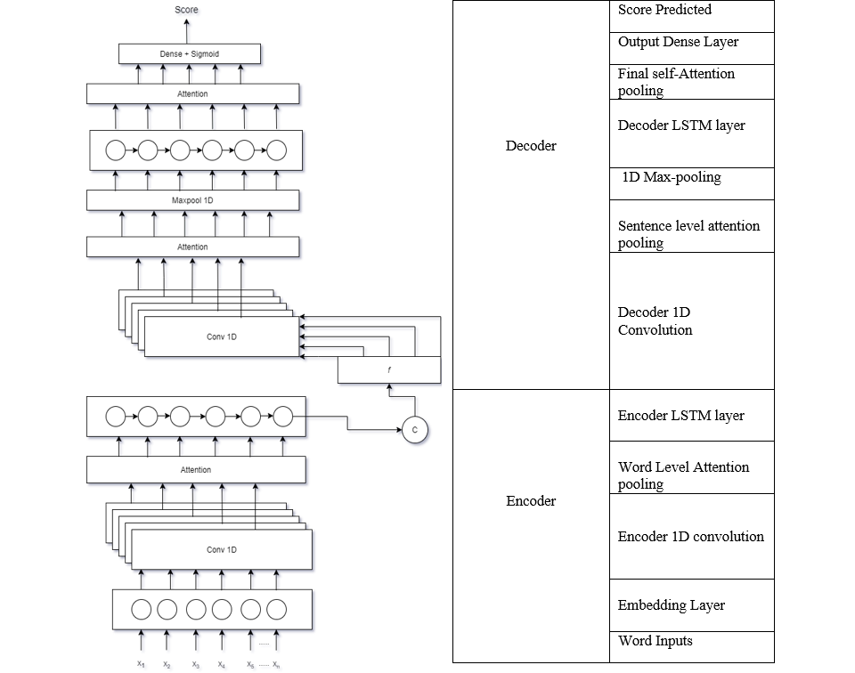
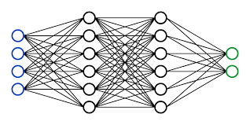
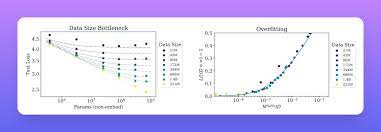

Research and Projects
With a goal to optimize assistive technology, my research mainly focuses on applications of NLP and CV to
usecases of assistive technology. From building voice assistants to designing pedagogy for the blind through AI, click on my research projects below to know more!

Automated essay scoring systems automatically score essays without any human intervention. With exisiting literature pointing to recurrent networks,
Applying a recurrent encoder-decoder architecture with alternate CNN and LSTM layers with self-attention, gave results on-par with SOTA.
The self-attention mechanism captures contextual words such as 'good','better' and assigns a higher score to them. The essays are scored based on
their semantical and syntactical correctness. Click the button below to view publication
Spam classification has always been an important aspect in online space. With a lot of algorithms available, I explored the space of passive-aggressive algorithms.
Optimising passive-aggressive algorithms with genetic operators gave the state-of-the-art accuracy and precision scores. Click the button below to view the publication

An exciting research where we analyse the disceribility of low-resolution images that are akain to partial vision of the blind.
We formulated a novel 'tactification' algorithm that renders high resolution images to low-resolution through a series of binarizations and pixelations.
We introduce a new paradigm of 'AI as proxy' to human vision whre accruacy scores of neural networks serve as discernibility parameters. This project is adviced by Dr. Kyle Keane,MIT
The resarch results are accepted to CSUN Disability Conference,2023.

This ongoing research focuses on exploring the limits of scaling laws stated in Kaplan et al,. we achived the results stated in the paper with cross entropy loss in transformer architecture.
experiments are being conducted to replicate the results with log-likelihood functions.